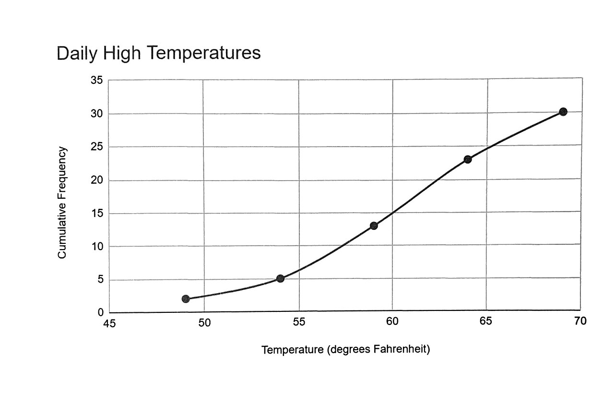
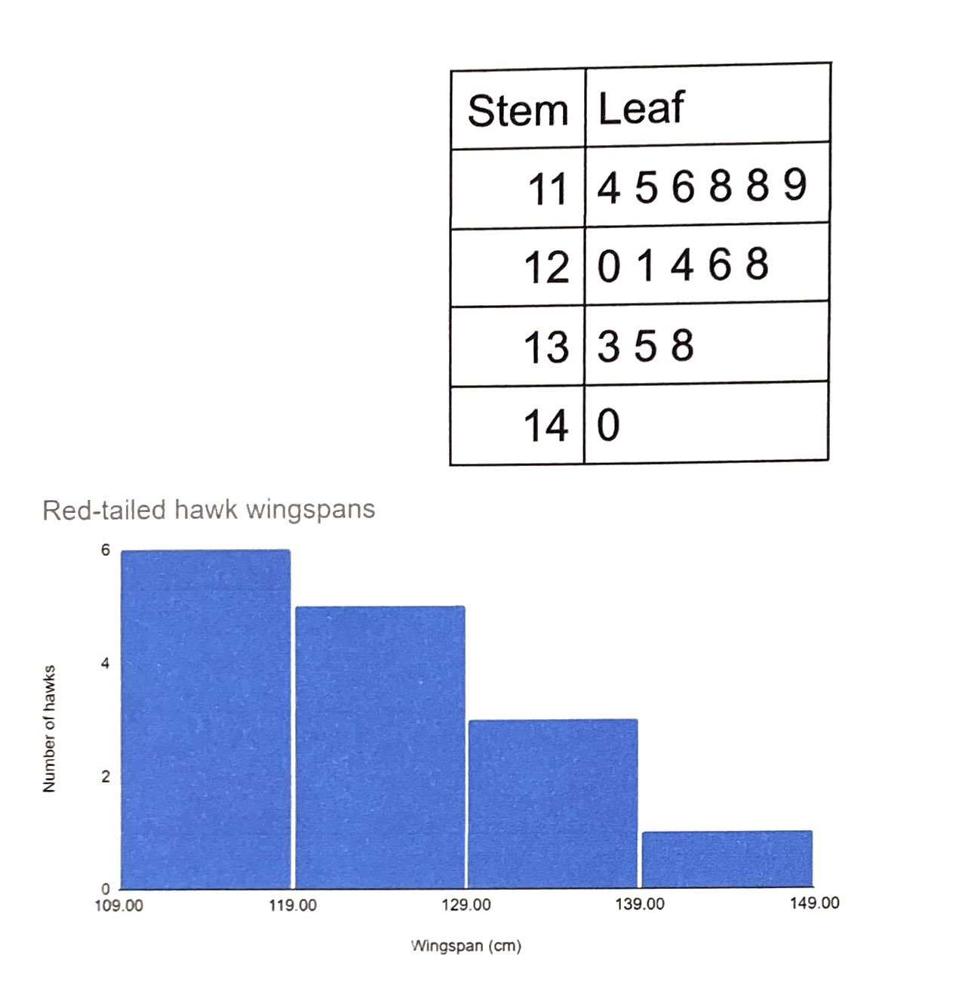
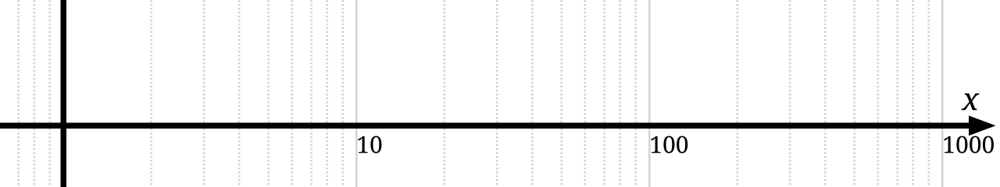

Displaying Data
A column of two hundred numbers tells you almost nothing; the same two hundred numbers drawn as a picture tell you almost everything in about four seconds. That is the whole promise of this chapter. You will learn to organize raw data into a frequency table, to choose the right picture for the kind of variable you have — bars and pies for categories, histograms and dot plots for measurements — and to read the shape that picture reveals. You will also learn the other half of the skill, the defensive half: how a perfectly honest set of numbers can be drawn in a way that lies, and how to spot it. No formula in this chapter is harder than dividing one number by another, so if arithmetic makes you nervous, this is a friendly place to start.
By the end of this chapter you can
- Build a frequency, relative frequency, and cumulative frequency table from raw data, and check that each column totals correctly.
- Construct a grouped frequency distribution: choose a class count, compute the class width, and find class midpoints.
- Answer “how many” and “what proportion” questions directly from a cumulative column.
- Display qualitative data with a bar chart, a Pareto chart, or a pie chart, and compute each slice’s angle.
- Display quantitative data with a histogram, a stem-and-leaf plot, or a dot plot, and say when each is the better choice.
- Explain exactly why histogram bars touch and bar-chart bars do not.
- Classify a distribution as symmetric, skewed left, skewed right, or uniform, and describe its modality.
- Detect a truncated axis or a distorted scale, and quantify the exaggeration it produces.
Section 1Frequency distributions

From a pile of numbers to a table
Raw data arrive as a list. A frequency distribution is simply a table that says, for each possible value (or each range of values), how many times it occurred. That count is the frequency, written f. The sum of all the frequencies is the sample size, n, so the very first thing you do after building a frequency table is add the column up and confirm it equals n. If it does not, you miscounted, and every number downstream is wrong.
Two more columns turn a bare count into something you can actually reason with. The relative frequency is the fraction of the data in that row:
relative frequency = f ÷ n
Relative frequencies always sum to 1 (or to 100% if you express them as percentages), give or take a tiny rounding wobble. They matter because they let you compare groups of different sizes: 12 out of 40 and 30 out of 100 are the same story (0.300 either way), but the raw counts 12 and 30 are not obviously comparable at all.
The cumulative frequency is a running total — the number of observations at or below that row. It answers “how many were at most this much?” without any further arithmetic. Its final entry must equal n, which is a second free error check.
A worked example, start to finish
A survey asked n = 40 adults, “On how many of the past seven days did you exercise?” The answers are whole numbers from 0 to 7, so each value gets its own row. Here is the complete table, with every column computed.
| Days (x) | Frequency f | Relative f ÷ n | Percent | Cumulative f | Cumulative relative |
|---|---|---|---|---|---|
| 0 | 6 | 6÷40 = 0.150 | 15.0% | 6 | 0.150 |
| 1 | 8 | 8÷40 = 0.200 | 20.0% | 14 | 0.350 |
| 2 | 10 | 10÷40 = 0.250 | 25.0% | 24 | 0.600 |
| 3 | 7 | 7÷40 = 0.175 | 17.5% | 31 | 0.775 |
| 4 | 5 | 5÷40 = 0.125 | 12.5% | 36 | 0.900 |
| 5 | 2 | 2÷40 = 0.050 | 5.0% | 38 | 0.950 |
| 6 | 1 | 1÷40 = 0.025 | 2.5% | 39 | 0.975 |
| 7 | 1 | 1÷40 = 0.025 | 2.5% | 40 | 1.000 |
| Total | 40 | 1.000 | 100.0% | — | — |
Check the two totals: 6 + 8 + 10 + 7 + 5 + 2 + 1 + 1 = 40 ✓, and 0.150 + 0.200 + 0.250 + 0.175 + 0.125 + 0.050 + 0.025 + 0.025 = 1.000 ✓. Now read answers straight off the table. What proportion exercised at most 3 days? The cumulative relative entry in the “3” row: 0.775, or 77.5%. What proportion exercised more than 3 days? Take the complement: 1 − 0.775 = 0.225. Verify it the long way — 5 + 2 + 1 + 1 = 9 people, and 9 ÷ 40 = 0.225 ✓. The two routes agree, which is exactly what a well-built table should guarantee.
Grouped distributions: when values do not repeat
The table above worked because there were only eight distinct values. Measurements like commute times, weights, or incomes rarely repeat, so a row-per-value table would be as long as the data set and just as useless. The fix is a grouped frequency distribution: sort the values into a handful of non-overlapping classes and count how many fall into each. Five to ten classes is the usual sweet spot — too few and you flatten the pattern into a featureless block, too many and you shatter it into noise.
To find the class width, take the range and divide by the number of classes you want, then always round up to a convenient number:
class width ≈ (maximum − minimum) ÷ (number of classes), rounded up
Rounding up is not a suggestion. If you round down, the classes collectively span less than the data does and the largest value has nowhere to go.
Worked example. Thirty commute times, in minutes, sorted: 5, 7, 8, 11, 12, 12, 14, 15, 16, 17, 18, 19, 20, 21, 22, 23, 24, 25, 26, 28, 29, 31, 33, 35, 38, 40, 42, 47, 52, 58. The minimum is 5 and the maximum is 58, so the range is 58 − 5 = 53. Aiming for 6 classes: 53 ÷ 6 = 8.83, which rounds up to a width of 9. Starting at the minimum, 5, the classes are 5–13, 14–22, 23–31, 32–40, 41–49, 50–58. The midpoint (or class mark) of a class is the average of its two limits.
| Class (min) | Midpoint | Frequency f | Relative f | Cumulative f |
|---|---|---|---|---|
| 5–13 | (5+13)÷2 = 9 | 6 | 6÷30 = 0.200 | 6 |
| 14–22 | (14+22)÷2 = 18 | 9 | 9÷30 = 0.300 | 15 |
| 23–31 | (23+31)÷2 = 27 | 7 | 7÷30 ≈ 0.233 | 22 |
| 32–40 | (32+40)÷2 = 36 | 4 | 4÷30 ≈ 0.133 | 26 |
| 41–49 | (41+49)÷2 = 45 | 2 | 2÷30 ≈ 0.067 | 28 |
| 50–58 | (50+58)÷2 = 54 | 2 | 2÷30 ≈ 0.067 | 30 |
| Total | — | 30 | 1.000 | — |
The cumulative column ends at 30 = n ✓. Reading it: 22 of the 30 commuters — that is 22 ÷ 30 ≈ 0.733, or about 73% — travel 31 minutes or less. Plotting cumulative frequency against the upper class limit and connecting the points gives the rising curve called an ogive, the figure at the top of this section.
Classes must not overlap, and they must not leave gaps. Writing classes as 5–13, 13–22, 22–31 is a beginner’s trap: a value of exactly 13 belongs to two classes at once, so your frequencies stop being a valid count and the column will not add to n. Every observation must land in exactly one class — no more, no less.
- Frequency is a count; the frequency column must sum to n.
- Relative frequency = f ÷ n; the column sums to 1 (100%) and makes unequal-sized groups comparable.
- Cumulative frequency is a running total that answers “how many at most?” and must end at n.
- For measurements, use a grouped table: 5–10 classes, width = range ÷ classes rounded up, classes non-overlapping and gapless.
Section 2Displaying qualitative data

Bar charts: the workhorse
Qualitative (categorical) data record which group something belongs to — blood type, major, mode of transport, brand preference. There is no arithmetic to do on the categories themselves; the only number in the room is how many landed in each. A bar chart displays exactly that: one bar per category, with bar height proportional to frequency or relative frequency.
Three rules make a bar chart honest. First, the bars are separated by gaps, because the horizontal axis is a list of names, not a measuring scale — there is no space “between” Bus and Bicycle to fill in. Second, all bars are the same width, so that height is the only thing carrying information. Third, the frequency axis starts at zero; we will see in Section 5 exactly how much damage is done when it does not.
Because categories have no natural order, you are free to sort them. Sorting the bars from tallest to shortest produces a Pareto chart, which makes the dominant categories jump out and is the default choice whenever the question is “what are the biggest contributors?”
Pie charts: parts of one whole
A pie chart shows the same information as proportions of a single circle. Each category gets a wedge whose central angle is its relative frequency times the full 360 degrees:
slice angle = (f ÷ n) × 360°
Worked example. Two hundred commuters (n = 200) named their primary mode of transport. Every column below is computed from the count.
| Mode | Frequency f | Relative f | Percent | Pie angle |
|---|---|---|---|---|
| Car | 84 | 84÷200 = 0.42 | 42% | 0.42 × 360° = 151.2° |
| Bus | 46 | 46÷200 = 0.23 | 23% | 0.23 × 360° = 82.8° |
| Bicycle | 30 | 30÷200 = 0.15 | 15% | 0.15 × 360° = 54.0° |
| Walk | 28 | 28÷200 = 0.14 | 14% | 0.14 × 360° = 50.4° |
| Other | 12 | 12÷200 = 0.06 | 6% | 0.06 × 360° = 21.6° |
| Total | 200 | 1.00 | 100% | 360.0° |
Every check passes: the counts sum to 200 = n, the relative frequencies sum to 1.00, and the angles sum to 151.2 + 82.8 + 54.0 + 50.4 + 21.6 = 360.0° ✓. Notice the rows of this table are already in descending order of frequency, so charting them as listed gives you a Pareto chart for free.
When a pie chart is the wrong tool
A pie chart carries one strict requirement that people break constantly: the categories must be mutually exclusive and exhaustive — every observation in exactly one slice, all slices together making one complete whole. Data from a “check all that apply” question fail this immediately. If 200 people can each name two hobbies, the counts sum to more than 200, the percentages sum past 100%, and a pie chart of them is not merely ugly, it is a false statement about the data. Use a bar chart instead.
Even when a pie is legitimate, it is often the weaker display. Human eyes compare lengths far more accurately than angles or wedge areas, so a 14% slice and a 15% slice are effectively indistinguishable while the corresponding bars are not. Pies also collapse under more than about five or six categories, and comparing two pies side by side is close to hopeless. A reasonable habit: reach for a pie only when you have a few categories and your point is genuinely “this piece is roughly half of everything”; otherwise, reach for bars.
Never add a third dimension to a pie. A tilted, extruded “3D” pie chart renders slices near the front with more visible area than slices of the same size at the back. The perspective, not the data, decides which category looks biggest — which means the chart is misreporting even though every number behind it is correct.
- Bar charts use equal-width bars separated by gaps, because the horizontal axis lists categories, not measurements.
- A Pareto chart is a bar chart sorted from tallest to shortest — best for “which categories dominate?”
- Pie slice angle = (f ÷ n) × 360°, and the angles must total 360°.
- Pies require mutually exclusive, exhaustive categories; they fail on multiple-response data and on more than about six categories.
Section 3Displaying quantitative data

Histograms
A histogram is the picture of a grouped frequency distribution: the horizontal axis is the measured variable on a real numeric scale, each class becomes a bar, and bar height is the frequency (or relative frequency) in that class. Because the horizontal axis is continuous, the bars touch. That single visual detail is the whole difference between a histogram and a bar chart, and it encodes a real difference in the data: in a bar chart the gap says “these are separate categories,” while in a histogram the shared edge says “this class ends exactly where the next one begins.”
Worked example. Twenty-five resting pulse rates, in beats per minute: 58, 61, 62, 64, 65, 67, 68, 68, 70, 71, 72, 72, 73, 74, 75, 76, 77, 78, 80, 81, 83, 85, 88, 91, 96. Using classes of width 10:
| Class (bpm) | Boundaries | Frequency f | Relative f |
|---|---|---|---|
| 50–59 | 49.5 – 59.5 | 1 | 1÷25 = 0.04 |
| 60–69 | 59.5 – 69.5 | 7 | 7÷25 = 0.28 |
| 70–79 | 69.5 – 79.5 | 10 | 10÷25 = 0.40 |
| 80–89 | 79.5 – 89.5 | 5 | 5÷25 = 0.20 |
| 90–99 | 89.5 – 99.5 | 2 | 2÷25 = 0.08 |
| Total | — | 25 | 1.00 |
Both checks pass: 1 + 7 + 10 + 5 + 2 = 25 = n ✓ and 0.04 + 0.28 + 0.40 + 0.20 + 0.08 = 1.00 ✓. The class boundaries in the middle column are the halfway points between one class’s upper limit and the next class’s lower limit; they are what you actually draw the bars against, which is how the bars come to touch without overlapping. The tallest bar sits over 70–79, holding 40% of the data, and the bars fall away more gradually on the right than on the left: the far-left bar holds 1 observation while the far-right bar holds 2, and the maximum (96) sits 17 beats above the peak class while the minimum (58) sits only 12 beats below it. That stretched right-hand side is mild right skew, and the arithmetic agrees — the mean of these 25 rates is 1855 ÷ 25 = 74.2 while the median (the 13th sorted value) is 73.0. Mean above median, tail to the right: a hint about shape that we develop in the next section.
One warning about histograms: the picture depends on choices you made. Change the number of classes and the same data can look smooth, spiky, or bimodal. That is not a flaw to be hidden but a reason to try two or three bin widths before you believe any feature you see.
Stem-and-leaf plots
A stem-and-leaf plot (or stemplot) gives you a histogram’s shape and keeps every original number. Split each value into a stem (the leading digits) and a leaf (the final digit), list the stems in a column, and write each leaf beside its stem in increasing order. For the pulse data, the stem is the tens digit:
| Stem | Leaves | Count |
|---|---|---|
| 5 | 8 | 1 |
| 6 | 1 2 4 5 7 8 8 | 7 |
| 7 | 0 1 2 2 3 4 5 6 7 8 | 10 |
| 8 | 0 1 3 5 8 | 5 |
| 9 | 1 6 | 2 |
| Total | Key: 6 | 4 means 64 bpm | 25 |
Turn that plot ninety degrees counter-clockwise and you are looking at the histogram from the previous table — identical counts, 1, 7, 10, 5, 2. The advantage is that nothing was thrown away: you can still read off the minimum (58), the maximum (96), and any repeated value (72 appears twice). Every stemplot needs a key, because “6 | 4” could just as easily mean 6.4 in another data set. Stemplots are wonderful for roughly 15 to 60 values and become unmanageable beyond that.
Dot plots
A dot plot is the simplest display of all: draw a number line and stack one dot above each value for every time it occurs. For the exercise-days data from Section 1, the column above 0 is 6 dots tall, above 1 is 8 dots, above 2 is 10 dots, and so on down to a single dot above 6 and above 7. With n = 40 the whole distribution fits on one line and, like a stemplot, no information is lost.
Dot plots shine for small data sets, for discrete counts, and for spotting outliers — a lone dot far out on the line is impossible to miss, whereas a histogram might hide it inside a wide bin. They become an unreadable smear past roughly 50 observations, at which point a histogram is the better instrument.
Gaps are grammar, not decoration. If you draw a histogram with gaps between the bars, you have told your reader that the variable is categorical when it is not. If you draw a bar chart with the bars touching, you have implied that Bus flows continuously into Bicycle. Readers absorb that signal instantly and unconsciously — so get it right.
- A histogram plots classes on a continuous axis, so its bars touch at the class boundaries; the shape depends on the bin width you choose.
- A stem-and-leaf plot shows the same shape while preserving every original value; it always needs a key.
- A dot plot stacks one dot per observation on a number line — ideal for small or discrete data and for spotting outliers.
- Rough guide by sample size: dot plot under about 50, stemplot 15–60, histogram for anything larger.
Section 4The shape of a distribution
Symmetric, skewed right, skewed left
Once a display exists, describe it in three words: shape, center, and spread. Chapter 4 handles center and spread; shape is this section. A distribution is symmetric when you could fold the picture down the middle and the two halves would roughly match — the bell-shaped curve is the famous case, but a flat distribution is symmetric too.
When one side stretches further than the other, the distribution is skewed, and here is the naming rule that trips up nearly everyone: a distribution is named for the direction of its long tail, not for where the pile of data sits. A skewed right (positively skewed) distribution has most of its data bunched on the left with a thin tail trailing off to the right — incomes, house prices, and hospital lengths of stay all look like this. A skewed left (negatively skewed) distribution is the mirror image: a bunch on the right, a tail dragging to the left — scores on an easy exam, or age at death in a wealthy country.
Worked example: right skew. Ten annual salaries at a small firm, in thousands of dollars: 32, 34, 35, 36, 38, 40, 42, 44, 46, 253 (the last is the owner). The sum is 32 + 34 + 35 + 36 + 38 + 40 + 42 + 44 + 46 + 253 = 600, so the mean is
x̄ = Σx ÷ n = 600 ÷ 10 = 60.0 thousand
With n = 10 the median is the average of the 5th and 6th sorted values: (38 + 40) ÷ 2 = 39.0 thousand. The mean sits 21 thousand above the median because that one enormous value pulls it there, and nine of the ten employees earn less than the “average” salary. The long right tail did that.
Worked example: left skew. Ten scores on a straightforward exam: 45, 62, 78, 85, 88, 90, 91, 93, 94, 96. The sum is 822, so x̄ = 822 ÷ 10 = 82.2, while the median is (88 + 90) ÷ 2 = 89.0. Now the mean falls below the median, dragged down by the low outlier at 45 — the signature of a left tail.
| Shape | Where the tail points | Typical mean vs. median | Everyday example |
|---|---|---|---|
| Symmetric | Neither side; both tails similar | Mean ≈ median | Adult heights within one sex |
| Skewed right | To the right (high values) | Mean usually > median | Household income, home prices |
| Skewed left | To the left (low values) | Mean usually < median | Scores on an easy exam |
| Uniform | Flat — no tail at all | Mean ≈ median | A fair die rolled many times |
Treat that third column as a reliable rule of thumb, not a theorem. For most real, single-peaked data it holds, and it is genuinely useful: if someone reports a mean far above the median, you should picture a right tail before you see the graph. But mathematicians have constructed skewed distributions where the ordering reverses, so confirm with the picture rather than trusting the rule blindly.
Uniform distributions and modality
A uniform distribution has roughly the same frequency in every class, so the histogram looks like a flat plateau. Rolling a fair die a few thousand times produces one; so does the last digit of a well-mixed set of ID numbers. Uniformity is worth naming because it is a strong claim: it says no value in the range is any more common than any other.
Modality counts the peaks. A unimodal distribution has one clear peak, a bimodal distribution has two, and anything with three or more is multimodal. Modality is the single most informative feature you can read off a histogram, because two peaks usually mean two populations have been mixed together. Waiting times at a clinic that runs both walk-in and scheduled visits will often be bimodal; so will heights in a group of mixed adults and children. When you see two peaks, do not summarize — split the data and describe each group on its own. A mean computed across a bimodal distribution can land squarely in the valley between the peaks, describing a value that almost nobody actually has.
“Skewed right” feels backwards until it clicks. Most of the data are on the left in a right-skewed distribution, which is why so many students name it the wrong way. Anchor on the tail: point at the thin, stretched-out end of the picture, and whichever direction your finger points is the name. Tail right, skewed right.
- Describe every display by shape, center, and spread; shape comes first.
- Skew is named for the tail: tail to the right = skewed right, tail to the left = skewed left.
- As a rule of thumb, right skew pulls the mean above the median and left skew pulls it below — confirmed here with exact arithmetic (60.0 vs. 39.0; 82.2 vs. 89.0).
- Uniform means flat; bimodal usually means two populations are mixed and should be analyzed separately.
Section 5Misleading graphs

The truncated axis
Every technique in this chapter can be turned against the reader, and the most common weapon by far is the truncated axis — a frequency or value axis that starts somewhere above zero. On a bar chart this is close to fatal, because a bar communicates by its length, and length is only meaningful when measured from zero. Cut the bottom off and the visible bar no longer represents the quantity at all; it represents the quantity minus whatever arbitrary number you chose to hide.
Worked example. A company’s quarterly sales, in millions of dollars, are Q1 = 98, Q2 = 100, Q3 = 102, Q4 = 104. The real change from Q1 to Q4 is
(104 − 98) ÷ 98 = 6 ÷ 98 = 0.0612, or about 6.1%
Drawn against an axis running from 0 to 110, the Q4 bar is 104 ÷ 98 = 1.061 times the Q1 bar — visibly a bit taller, honestly modest. Now truncate the axis so it starts at 97. The visible bar heights become 98 − 97 = 1, 100 − 97 = 3, 102 − 97 = 5, and 104 − 97 = 7 units. The Q4 bar is now seven times the height of the Q1 bar, an apparent increase of (7 − 1) ÷ 1 = 6.00, or 600%. Nothing in the data changed. One number on one axis changed, and a 6% drift across the whole year became an explosion.
Edward Tufte gave this exaggeration a name and a formula. The lie factor is the size of the effect shown in the picture divided by the size of the effect in the data:
lie factor = (apparent effect) ÷ (actual effect) = 6.00 ÷ 0.0612 ≈ 98
A truthful graph has a lie factor near 1. This one overstates the growth by roughly a hundredfold. So: bar charts and histograms must begin at zero, without exception. Line graphs of a quantity that never approaches zero — body temperature, or a stock index — may legitimately start elsewhere, because a line communicates through its slope rather than its length. Even then, the axis must be clearly labeled and the break made obvious, and you should still ask whether the slope you are being shown is dramatic or merely zoomed.
Distorted scales, distorted areas
The second family of tricks distorts the scale itself rather than its starting point. A few worth recognizing:
- Area and volume inflation. A pictogram doubles a quantity by doubling both the width and the height of an icon. But doubling both dimensions multiplies the area by 2 × 2 = 4, and a drawing that also looks three-dimensional implies a volume 23 = 8 times larger. The data said 2; the reader perceives 4 or 8. Icons should be repeated, not resized.
- Unequal class widths. A histogram whose classes are 0–9, 10–19, and then 20–59 puts four classes’ worth of data into one bar. That bar looks enormous simply because it is wide. Keep class widths equal, or plot density (frequency ÷ class width) instead of raw frequency.
- Uneven axis spacing. A time axis that shows 1990, 2000, 2010, 2015, 2018, 2020 at equal intervals compresses early decades and stretches recent years, manufacturing a hockey-stick curve out of steady growth.
- Dual vertical axes. Two series on two different scales can be made to cross, converge, or diverge at will by rescaling one axis. Any “relationship” you see is a decision the chartmaker made.
- Logarithmic scales. These are entirely legitimate — they are the right tool for data spanning several orders of magnitude — but on a log scale a straight line means constant percentage growth, not constant growth. An unlabeled log axis will make explosive growth look tame.
| Warning sign | What it does to the reader | What to ask |
|---|---|---|
| Value axis not starting at zero | Multiplies apparent differences (here, 6% looked like 600%) | Where does the axis actually begin? |
| Axis with no numbers or units | Makes any slope unverifiable | Percent of what? Per what? |
| Icons resized in two dimensions | Turns a doubling into a 4× or 8× impression | Is length or area encoding the number? |
| Unequal histogram class widths | Inflates the widest bar | Are all the classes the same width? |
| Unevenly spaced time axis | Fabricates acceleration | Are the gaps between labels equal in time? |
| 3D bars, tilted pies, drop shadows | Adds visual area unrelated to data | Does the decoration carry any information? |
| Truncated or cherry-picked date range | Hides the trend outside the window | What happened just before and just after? |
Assume incompetence before malice — then check anyway. Most misleading charts are produced by default software settings, not by liars: spreadsheet programs will happily truncate an axis for you and call it “auto.” The reader cannot tell the difference between a deception and an accident, and neither can be defended. Read every axis before you read the picture, and set your own axes deliberately.
- Bar charts and histograms must start at zero; length only means something measured from zero.
- A truncated axis can turn a 6.1% change into an apparent 600% change — a lie factor of about 98.
- Scaling an icon in two dimensions inflates a 2× change to 4× by area and 8× by apparent volume.
- Unequal class widths, uneven time spacing, dual axes, and unlabeled log scales all distort without altering a single data value.
- Read the axes first. Always.
The chapter in one breath
- A frequency distribution counts how often each value or class occurs; the counts must sum to n, the relative frequencies (f ÷ n) must sum to 1, and the cumulative column must end at n.
- For measurements, group into 5–10 non-overlapping classes of equal width, where width = range ÷ number of classes, rounded up.
- Qualitative data get bar charts (gaps between bars, equal widths, axis from zero), sorted into a Pareto chart when you want the dominant categories to stand out.
- Pie charts need mutually exclusive, exhaustive categories; slice angle = (f ÷ n) × 360°, and the angles must total 360°.
- Quantitative data get histograms (bars touch, because the axis is continuous), stem-and-leaf plots (shape plus every original value, with a key), or dot plots (one dot per observation, best for small or discrete data).
- Describe any display by shape, center, and spread. Skew is named for the tail: right tail = skewed right, and the mean is then usually pulled above the median.
- Bimodal almost always means two populations are mixed — split them rather than summarizing them together.
- A truncated axis or a distorted scale misleads without altering a single number; read the axes before you read the picture.
ReferenceWords worth knowing
A quick reference for the terms in this chapter — skim it now, or circle back whenever a word trips you up.
- Bar chart
- A display of qualitative data using equal-width bars separated by gaps, with bar height proportional to frequency or relative frequency.
- Bimodal
- Having two distinct peaks; usually a sign that two different populations have been mixed into one data set.
- Class width
- The size of each interval in a grouped frequency distribution; approximately the range divided by the number of classes, always rounded up.
- Cumulative frequency
- A running total of frequencies — the number of observations at or below a given value or class. Its last entry equals n.
- Dot plot
- A display in which one dot is stacked above a number line for each observation at that value.
- Frequency (f)
- The number of times a particular value or class occurs in a data set.
- Frequency distribution
- A table pairing each value or class with the number of observations that fall in it.
- Grouped frequency distribution
- A frequency table built from ranges (classes) rather than individual values; used when values rarely repeat.
- Histogram
- A display of quantitative data in which classes sit on a continuous axis and the bars therefore touch at the class boundaries.
- Lie factor
- The size of the effect shown in a graphic divided by the size of the effect in the data. An honest graph has a lie factor near 1.
- Ogive
- A line graph of cumulative frequency plotted against the upper class limits; it rises from 0 to n.
- Outlier
- An observation lying far from the bulk of the data; often obvious on a dot plot or stemplot and easily hidden by wide histogram bins.
- Pareto chart
- A bar chart with the bars arranged from tallest to shortest, emphasizing the largest categories.
- Pie chart
- A circle divided into wedges whose central angles are proportional to relative frequency; valid only for mutually exclusive, exhaustive categories.
- Relative frequency
- The proportion of the data in a class, f ÷ n; the column sums to 1, or 100%.
- Skewed left (negatively skewed)
- A distribution whose long tail extends toward the low values; the mean is typically less than the median.
- Skewed right (positively skewed)
- A distribution whose long tail extends toward the high values; the mean is typically greater than the median.
- Stem-and-leaf plot
- A display splitting each value into a leading stem and a trailing leaf, preserving every original observation. Requires a key.
- Symmetric distribution
- A distribution whose halves are approximate mirror images about its center.
- Truncated axis
- A value axis that begins above zero, exaggerating apparent differences between bars.
- Uniform distribution
- A distribution in which every class has roughly the same frequency, producing a flat display.
- Unimodal
- Having a single clear peak.